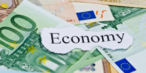

Keunggulan Biofuels

Ramah Lingkungan
Biofuels mengurangi emisi karbon dan mendukung keberlanjutan lingkungan.

Dapat Diperbaharui
Biofuels dibuat dari sumber yang dapat diperbaharui seperti tanaman dan limbah organik.

Mendukung Ekonomi Lokal
Produksi biofuels menciptakan lapangan kerja dan meningkatkan pendapatan lokal.